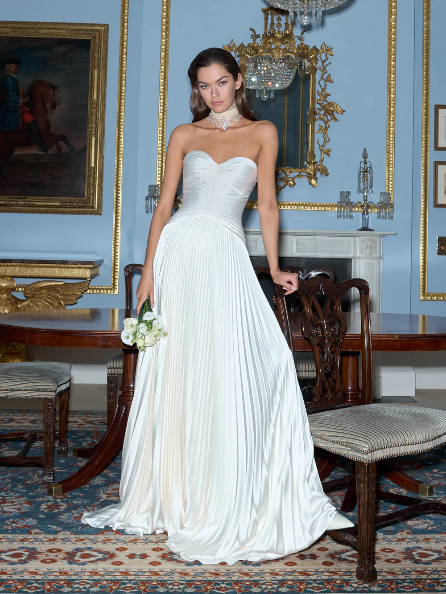
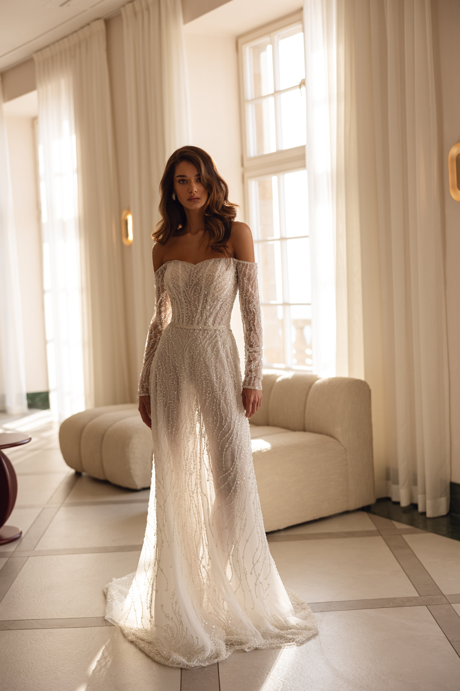
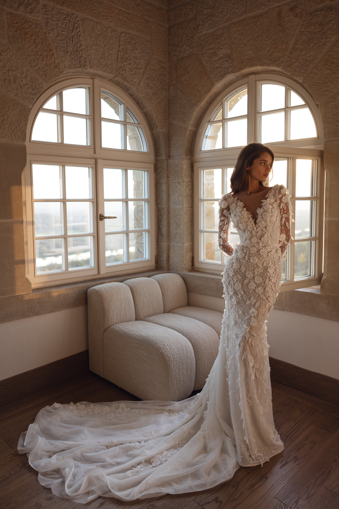
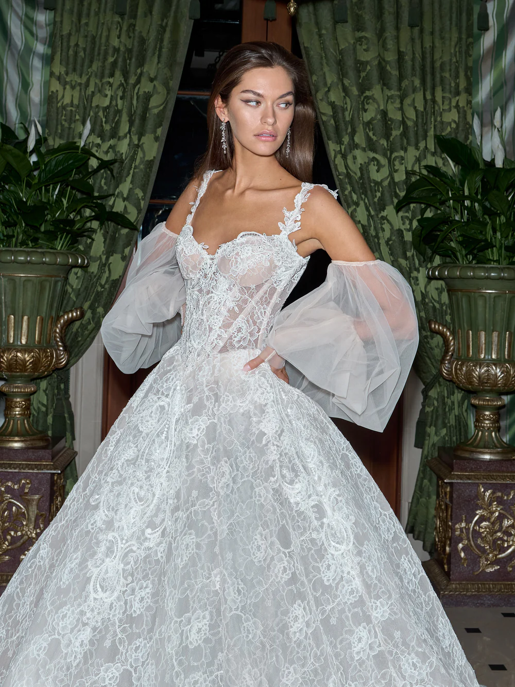

Đăng ngày: 12/11/2025 | Tác giả: Minh Hiếu

Năm 2025 tiếp tục chứng kiến sự đổi mới mạnh mẽ của ngành thời trang cưới. Không chỉ tập trung vào vẻ đẹp lộng lẫy, các nhà thiết kế còn hướng đến triết lý tối ưu trải nghiệm cho cô dâu: thoải mái, nhẹ nhàng, dễ di chuyển nhưng vẫn đầy tính nghệ thuật. Những mẫu váy cưới năm nay được tạo nên từ sự kết hợp hài hòa giữa yếu tố truyền thống và phong cách hiện đại, mang đến cá tính riêng cho từng cô dâu.
Dưới đây là 5 xu hướng váy cưới nổi bật nhất năm 2025 được tổng hợp từ các tuần lễ thời trang cưới lớn tại Paris, New York và Milan.
1. Váy cưới Minimalist – Tối giản nhưng đầy tinh tế
Tư tưởng “Less is more” tiếp tục là chìa khóa thành công của phong cách cưới tối giản năm nay. Không cần quá nhiều chi tiết cầu kỳ, một chiếc váy với phom dáng sắc nét cùng chất liệu cao cấp đã đủ tạo nên vẻ đẹp vượt thời gian.
“Less is more – càng đơn giản, càng sang trọng.”
Xu hướng này đặc biệt phù hợp với những cô dâu yêu thích sự thanh lịch, muốn tập trung vào thần thái và đường nét cơ thể. Các chất liệu được ưu ái gồm: lụa satin, crepe, lụa Ý và chiffon mờ. Một số nhà thiết kế còn bổ sung chi tiết cut-out nhỏ hoặc cổ vuông để tạo điểm nhấn nhẹ nhưng hiện đại.
2. Váy cưới dáng A – Biểu tượng cổ điển trở lại
Sau nhiều năm nhường chỗ cho kiểu váy ôm sát, năm 2025 chứng kiến sự “tái xuất” mạnh mẽ của dáng váy chữ A. Lý do rất đơn giản: đây là kiểu váy phù hợp hầu hết mọi vóc dáng, tạo cảm giác thon gọn tự nhiên mà không cần gò bó.
Điểm nổi bật của xu hướng năm nay nằm ở các đường xếp nếp mềm và kết cấu phân tầng nhẹ nhàng. Nhiều thương hiệu còn kết hợp chất liệu satin bóng nhẹ để tạo độ rủ tự nhiên khi di chuyển, giúp cô dâu trông thướt tha trong từng bước chân.
3. Ren 3D – Sống động và nghệ thuật hơn bao giờ hết
Ren 3D không còn xa lạ trong các bộ sưu tập cưới, nhưng năm 2025 nó trở nên táo bạo hơn và tinh xảo hơn. Những họa tiết hoa lá nổi được chế tác bằng kỹ thuật thủ công, tạo chiều sâu và hiệu ứng thị giác ấn tượng.
Điểm đặc biệt là ren 3D đang được ứng dụng linh hoạt hơn: không chỉ trên thân váy mà còn trên tay áo dài xuyên thấu, cổ áo, hoặc thậm chí là voan đội đầu. Sự kết hợp này khiến tổng thể bộ váy trở nên mềm mại và lãng mạn như một khu vườn nhỏ đang nở hoa.
4. Váy cưới có tay – Thanh lịch và đầy khí chất
Váy cưới có tay đang là lựa chọn được yêu thích tại Châu Âu và dần lan sang thị trường Châu Á. Không chỉ mang đến vẻ đẹp tinh tế, xu hướng này còn giúp tôn lên sự dịu dàng và kín đáo đặc trưng của người Á Đông.
Có nhiều biến thể của xu hướng này trong năm 2025:
- Tay dài ren trong suốt – thanh thoát nhưng sang trọng
- Tay phồng cổ điển – lấy cảm hứng hoàng gia
- Tay lửng gấp nếp – phù hợp tiệc cưới ngoài trời
Nhìn chung, váy có tay mang đến vẻ đẹp “đủ kín – đủ sang”, thích hợp cho cả lễ đường trang trọng lẫn tiệc cưới ban ngày.
5. Tùng váy xếp tầng – Bồng bềnh như mây

Những chiếc tùng váy nhiều tầng luôn tạo cảm giác như nàng công chúa bước ra từ cổ tích. Năm 2025, xu hướng này được cải tiến để trở nên nhẹ hơn nhưng vẫn giữ được độ bồng bềnh nhờ chất liệu tulle cao cấp và organza mỏng.
Các lớp xếp tầng không còn quá dày mà được thiết kế xen kẽ, tạo độ thoáng và cảm giác chuyển động mềm mại hơn. Đây là lựa chọn tuyệt vời cho những cô dâu yêu thích sự nổi bật, nhẹ nhàng và đầy nữ tính.
Kết luận
Dù chọn phong cách nào – tối giản, cổ điển hay lộng lẫy – cô dâu vẫn là nhân vật trung tâm tỏa sáng trong ngày trọng đại. Xu hướng chỉ là gợi ý, còn điều quan trọng nhất là bạn cảm thấy tự tin và thoải mái trong chiếc váy của chính mình. Chúc bạn tìm được một thiết kế thật phù hợp và đáng nhớ!